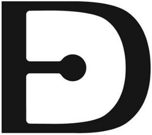

Trade Mark Journal No.2025/011 14 March 2025
WO0000001827722 (11,19,20,35)
Office of origin: European Union Intellectual Property Office (EUIPO)
Date of International Registration:17 June 2024
Date of designation in the UK:
17 June 2024

International priority date claimed: 25 March 2024
(European Union Intellectual Property Office (EUIPO))
(019003916)
- Class 11
- Lamps; floor lamps; LED lamps; wall lights; pedestal lamps; arc lamps; hanging lamps; oil lamps; halogen lamps; outdoor lighting; table lamps; electric lamps; flexible lamps; fluorescent lamps; lamps for outdoor use; lamps for tents; studio lamps; portable search lamps; halogen light bulbs; light bulbs, electric; LED light bulbs; smart light bulbs; lanterns; lamp shades; electric torches; lighting armatures; fluorescent lamp tubes; lamp glasses; lamp chimneys made of glass; lamp mantles; electric indoor lighting installations; flat panel lighting apparatus; stage lighting apparatus; emergency lighting installations; LED luminaires; outdoor lighting fittings; light bars; lamp bases; LED candles; electric candles; Christmas tree ornaments for illumination [electric lights]; lighting devices for showcases; light-emitting diodes [LED] lighting apparatus; downlights; lighting fittings; lighting apparatus; lamp posts; spotlights; flaming torches; security lighting; aquarium lights; display lighting; garden lighting; halogen luminaires; ceiling fans with integrated lights; bath fittings; shower fittings; fittings for basins; lamp holders; sanitary water fittings; shower installations; shower cubicles; shower baths; bathroom sinks; bath screens; bath tubs; solar lamps; tanning beds; solaria, other than for medical purposes; tanning booths; steam baths, saunas and spas; decorative fountains, sprinkler and irrigation systems; sanitary and bathroom installations and plumbing fixtures; cistern levers; shower screens; electric cooktops; heated display cabinets; plate warmers; cooking, heating, cooling and preservation equipment, for food and beverages; electric domestic cooking appliances; sous-vide cookers, electric; heating apparatus, electric; beverage cooling apparatus; refrigerated cabinets for the storage of food; refrigerated cabinets for the storage of drink; heated cabinets for foodstuffs; heated cabinets for use in the food service industry; wine cellars, electric; vapour extractor hoods for kitchen stoves; electric ranges; cooking rings; cooking stoves; ovens; domestic cooking ovens; frying machines; electric refrigerators [for household purposes]; ice cream makers; cooking grills; refrigerated food display apparatus; heating installations incorporated in windows; heating installations incorporated in glass; installations for heating foodstuffs; cooking hobs; plates [parts of stoves]; glass or ceramic plates sold as parts of ovens; gas stoves; wood burning stoves; cooking utensils, electric; fireplaces; fireplace inserts; simulated log fires [domestic]; portable electric fires; filters for fume extractors; hand driers; hot air bath fittings; full-body drying apparatus; electrically powered warm air face dryers; electric hot air hand dryers; blankets, electric, not for medical purposes; heat pads for warming; bed warmers; personal heating and drying implements; electric drying apparatus for household purposes; heated towel drying rails; refrigerating apparatus; refrigerated sales counters; refrigerating chambers; cooling apparatus and appliances; refrigerating display cabinets; stop cocks for regulating water; aeration apparatus; cold air blowing apparatus; supply air diffusers; under floor heating; radiant heaters; bath linings, fitted; fitted liners for shower trays; fitted liners for hot tubs.
- Class 19
- Tiles; mosaic wall tiles; ceramic tiles for internal walls; ceramic tiles for external floors; ceramic tiles for external walls; ceramic tiles for internal floors; clay wall tiles; tiles of porcelain; earthenware tiles; ceramic tiles; tiles of marble; wooden tiles; rubber tiles; tiles of slate; gypsum wall tiles; tiles of glass; stucco tiles; plastic tiles; paving tiles; ceiling boards, not of metal; wall tiles, not of metal; interior non-metal window shutters; arbours [structures], not of metal.
- Class 20
- Furniture; furniture for kitchens; garden furniture; glass furniture; furniture of metal; furniture for children; furniture for the physically handicapped, those of reduced mobility and invalids; bathroom furniture; furniture for shops; furniture for saunas; office furniture; fitted furniture; transformable furniture; school furniture; divans; extendible sofas; divan beds; beds; bunk beds; wooden beds; foldaway beds; children's beds; mattresses; bedsprings; bed bases; metal bedsteads; bed heads; wardrobe interior fitments; fittings (non-metallic -) for cupboards; doors for furniture; clothes hangers, clothes stands [furniture] and clothes hooks; cupboards; sliding doors for furniture; mirrored cabinets; kitchen cabinets; room dividing cupboards; pedestal cabinets; wall cupboards; tables; kitchen tables; tables for use in gardens; height adjustable tables; worktables; pasting tables; tea tables; computer tables; dressing tables; office tables; occasional tables; racks [furniture]; shelving units; mobile storage racks [furniture]; wall shelves [furniture]; library shelves; bookcases; food racks; folding shelves; shoe racks; writing desks; desks; seats; work stools; rocking chairs; swivel chairs; babies' chairs; office armchairs; high chairs for babies; footstools; sofas; mirrors (silvered glass); furniture moldings; support stands [furniture]; stair fittings of plastics; door, gate and window fittings, non-metallic; curtain rings; shower curtain rings; bag hangers, not of metal; shower rods; bath rails, not made of metal; hinges, not of metal; fasteners, non-metallic; staves of wood; labels of plastic; door stops of wood; stair rods of plastic; non-metal hooks; doorknobs, not of metal; non-metal clamps; tent pegs, not of metal; sink liners; locks and keys, non-metallic; stakes, not of metal, for plants or trees; door fittings made of plastics; hinges, not of metal, for doors and windows; door bolts, not of metal; furniture for doors [non-metallic]; window openers and closers, not of metal, non-electric, for rolling windows; paper screen doors; non-metallic tracks for sliding doors; decorative strips of plastics for application to doors; decorative edging strips of wood for use with window fittings; indoor window blinds of textile; bolts, not of metal; screw rings, not of metal; architectural fasteners of non-metallic materials; stuffed animals; busts of plaster; busts of wood; busts of plastic; mobiles [decoration]; wall decorations of wax; wall decorations of wood; plastic models for decoration; ornamental models made of wood; ornamental models made of wax; decorative window finials; statuettes made of ivory; carvings of wax; sculptures made from wood; statuettes of bone; sculptures of plastic; gazing globes; statues, figurines, works of art and ornaments and decorations, made of materials such as wood, wax, plaster or plastic, included in the class; commemorative shields of wood, wax, plaster or plastic; display stands of metal; work counters [furniture]; work surfaces; counters for display purposes; sideboards; chests; drawers [furniture parts]; dressers; kitchen dressers [furniture]; chests of drawers; chaise longues; bedside cabinets; furniture parts; tea trolleys; space dividers [furniture]; room dividers; shelf dividers (non-metallic -); furniture units for kitchens; connecting elements (non-metallic -) for furniture; assembled display units [furniture]; wall-mounted baby changing platforms; edgings of plastic for furniture; fixings, not of metal for furniture; fixings, not of metal for shelves; fitted fabric furniture covers; beds, mattresses, pillows and cushions; beach beds; drawer handles (non-metallic -); bar furniture; composable furniture; dividing panels; screens [furniture]; portable partitions [furniture]; armchairs; bed chairs; freestanding towel racks; book rests [furniture]; umbrella stands; magazine racks; bottle racks; bean bag chairs; textile covers [shaped] for furniture; indoor blinds, and fittings for curtains and indoor blinds; glass cabinets; rods for beds; mattress bases; bassinets; cushions; picture frames [not of precious metal]; picture frames; mirrors [furniture]; decorative mirrors; mirror frames; silvered glass [mirrors]; fittings for curtains; curtain tracks; louvre blinds [indoor]; venetian blinds; indoor window blinds [furniture]; slatted indoor blinds; indoor blinds [roller]; coatstands; bathroom cupboards; basin cabinets; animal housing and beds; containers in the form of boxes made of wood; meat safes; containers, and closures and holders therefor, non-metallic; step stools; ladders of wood or plastics; advertising display boards; multi-purpose display stands; display units for presentation purposes; point of purchase displays; plaques made of wood; plaques made of plastics; table decorations of plastic; tiles (mirror -) for fixing to walls.
- Class 35
- Business promotion; sales promotion; career networking services; marketing services provided by means of digital networks; management assistance; organization of trade fairs; advertising, marketing and promotional services; advertising services to create corporate and brand identity; advertising services to create brand identity for others; retail services in relation to works of art; promoting the artwork of others by means of providing online portfolios via a website; advertising services relating to books; magazine advertising; subscriptions to electronic journals; advertising in periodicals, brochures and newspapers; business consultancy to firms; management advisory services related to franchising; business organization advice; advice in the running of establishments as franchises; price analysis services; business analysis of markets; analysis of marketing trends; advertising analysis; business analysis and information services, and market research; corporate identity services; export promotion services; promotion, advertising and marketing of on-line websites; advertising, marketing and promotional consultancy, advisory and assistance services; wholesale services in relation to works of art; arranging and conducting of art exhibitions for commercial or advertising purposes; wholesale, retail and online retail services of indoor furniture, outdoor furniture, furniture for washrooms, furniture for kitchens, parts of furniture, lamps; wholesale, retail and online retail services of tables, beds, writing desks, divans, armchairs, chairs; wholesale, retail and online retail services of carpets, wall hangings, blinds, tiles, home and office textiles.
DEXELANCE S.P.A.
Representative: GLP S.R.L., Viale Europa Unita 171, I-33100 Udine (UD), ITALY